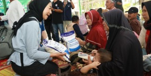
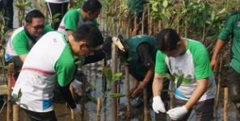

Aksi Bersih Lingkungan
Kegiatan gotong royong membersihkan lingkungan permukiman, fasilitas umum, dan ruang publik untuk menciptakan kawasan yang lebih bersih dan nyaman.
Berakar pada Nilai, Bergerak untuk Rakyat.
LINGKUNGAN · SOSIAL DAN KEMANUSIAAN
Merawat lingkungan sekaligus memperkuat kepedulian terhadap sesama melalui kegiatan penghijauan, pemberdayaan masyarakat, dan aksi sosial bersama.

GAMBARAN PROGRAM
PPP Peduli Bumi dan Kemanusiaan menghadirkan kegiatan sosial dan lingkungan yang mendorong partisipasi masyarakat dalam menciptakan kehidupan yang lebih bersih, sehat, dan berkelanjutan. Melalui kolaborasi bersama relawan dan komunitas lokal, program ini berfokus pada penghijauan, edukasi lingkungan, serta bantuan kemanusiaan bagi masyarakat yang membutuhkan.
TUJUAN PROGRAM
Meningkatkan Kepedulian Lingkungan
Memperkuat Solidaritas Sosial
Mendorong Partisipasi Masyarakat
Kegiatan gotong royong membersihkan lingkungan permukiman, fasilitas umum, dan ruang publik untuk menciptakan kawasan yang lebih bersih dan nyaman.
Kegiatan penanaman serta perawatan pohon bersama masyarakat untuk meningkatkan kualitas lingkungan dan memperluas ruang hijau.
Penyaluran bantuan kebutuhan pokok serta dukungan sosial bagi masyarakat yang membutuhkan melalui koordinasi bersama relawan dan komunitas setempat.
Mengidentifikasi kondisi lingkungan dan kebutuhan sosial masyarakat melalui komunikasi dengan warga serta komunitas setempat.
Menyusun kegiatan, menentukan lokasi, serta mempersiapkan kebutuhan bersama relawan dan pihak terkait.
Melaksanakan aksi lingkungan dan kegiatan kemanusiaan secara kolaboratif dengan melibatkan masyarakat.
Melakukan evaluasi kegiatan serta mengidentifikasi kebutuhan lanjutan untuk mendukung keberlanjutan program.
Jadwal, lokasi, biaya, dan penanggung jawab belum ditentukan. Pelaksanaan nyata memerlukan persetujuan organisasi dan penilaian kebutuhan.
Melalui penghijauan, aksi lingkungan, dan kegiatan sosial, semangat gotong royong menjadi bagian penting dalam membangun masyarakat yang lebih peduli terhadap lingkungan dan sesama.


Foto ilustrasi kegiatan berdasarkan desain prototipe akademik, bukan dokumentasi pelaksanaan program ini.